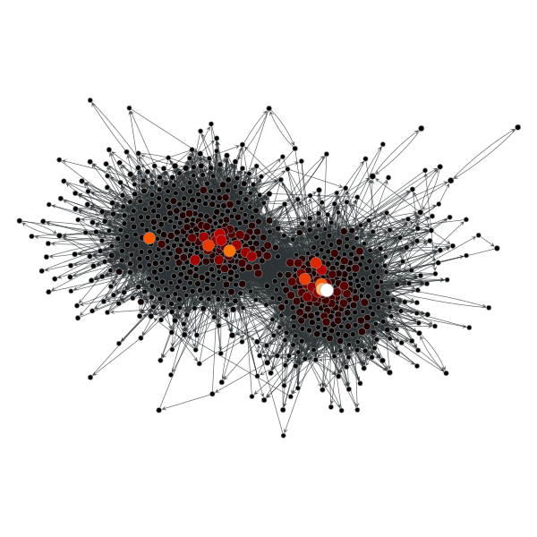
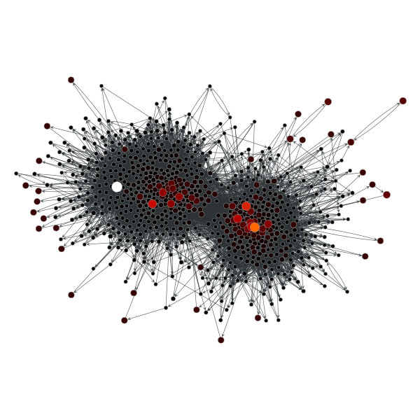
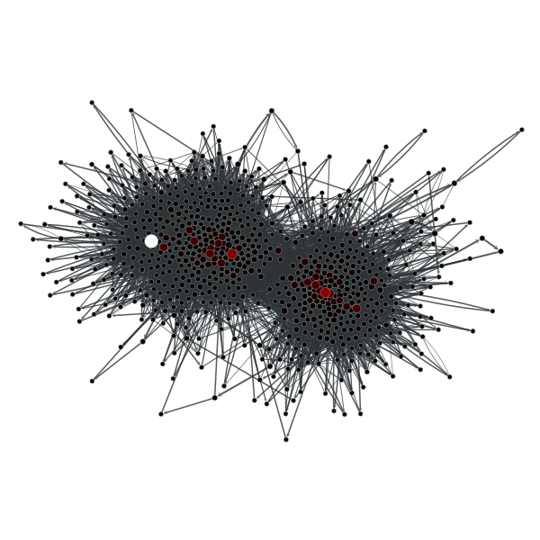
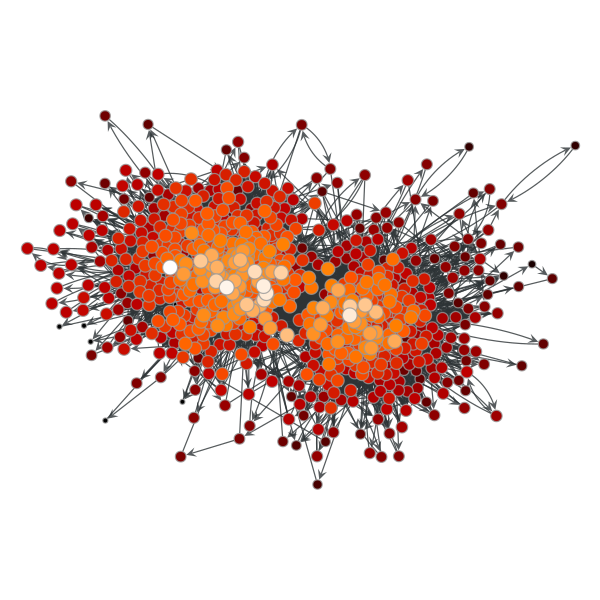
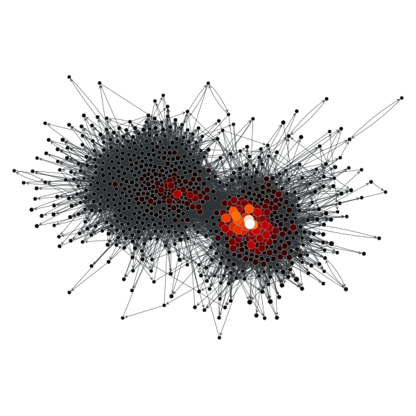
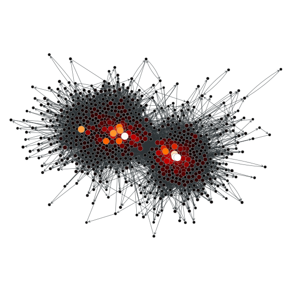
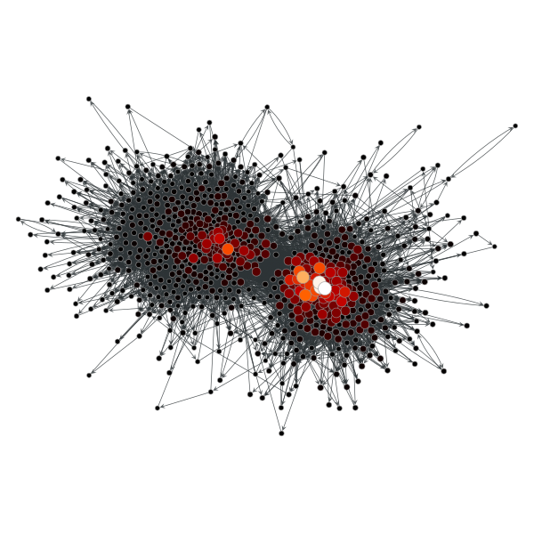
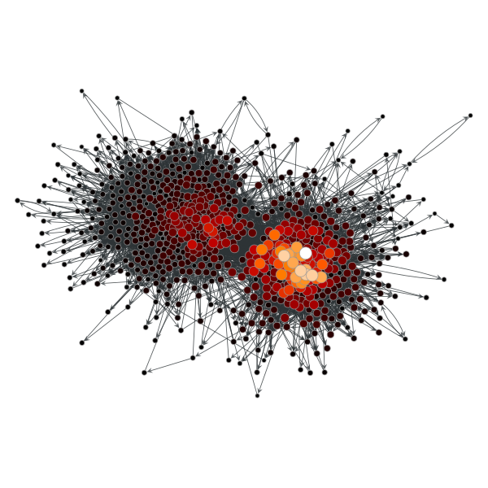
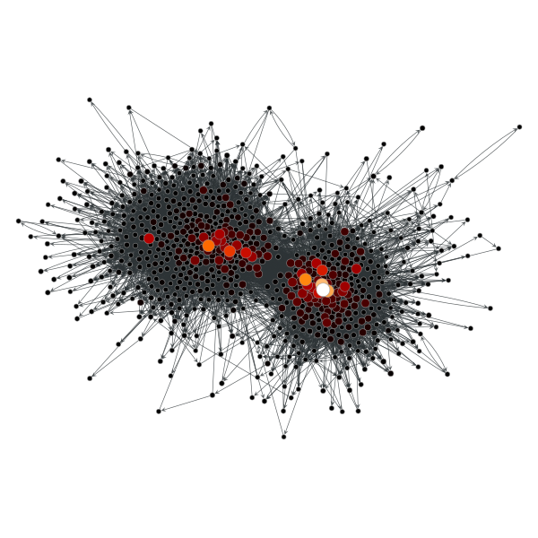
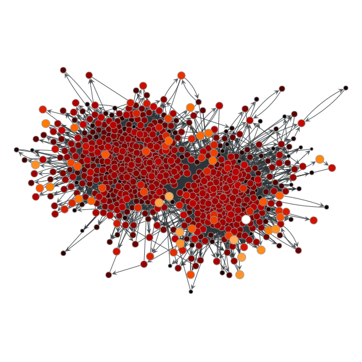

graph_tool.centrality - Centrality measures¶
This module includes centrality-related algorithms.
Summary¶
pagerank |
Calculate the PageRank of each vertex. |
betweenness |
Calculate the betweenness centrality for each vertex and edge. |
central_point_dominance |
Calculate the central point dominance of the graph, given the betweenness centrality of each vertex. |
closeness |
Calculate the closeness centrality for each vertex. |
eigenvector |
Calculate the eigenvector centrality of each vertex in the graph, as well as the largest eigenvalue. |
katz |
Calculate the Katz centrality of each vertex in the graph. |
hits |
Calculate the authority and hub centralities of each vertex in the graph. |
eigentrust |
Calculate the eigentrust centrality of each vertex in the graph. |
trust_transitivity |
Calculate the pervasive trust transitivity between chosen (or all) vertices in the graph. |
Contents¶
-
graph_tool.centrality.pagerank(g, damping=0.85, pers=None, weight=None, prop=None, epsilon=1e-06, max_iter=None, ret_iter=False)[source]¶ Calculate the PageRank of each vertex.
Parameters: g :
GraphGraph to be used.
damping : float, optional (default: 0.85)
Damping factor.
pers :
PropertyMap, optional (default: None)Personalization vector. If omitted, a constant value of \(1/N\) will be used.
weight :
PropertyMap, optional (default: None)Edge weights. If omitted, a constant value of 1 will be used.
prop :
PropertyMap, optional (default: None)Vertex property map to store the PageRank values. If supplied, it will be used uninitialized.
epsilon : float, optional (default: 1e-6)
Convergence condition. The iteration will stop if the total delta of all vertices are below this value.
max_iter : int, optional (default: None)
If supplied, this will limit the total number of iterations.
ret_iter : bool, optional (default: False)
If true, the total number of iterations is also returned.
Returns: pagerank :
PropertyMapA vertex property map containing the PageRank values.
See also
betweenness- betweenness centrality
eigentrust- eigentrust centrality
eigenvector- eigenvector centrality
hits- hubs and authority centralities
trust_transitivity- pervasive trust transitivity
Notes
The value of PageRank [pagerank-wikipedia] of vertex v, \(PR(v)\), is given iteratively by the relation:
\[PR(v) = \frac{1-d}{N} + d \sum_{u \in \Gamma^{-}(v)} \frac{PR (u)}{d^{+}(u)}\]where \(\Gamma^{-}(v)\) are the in-neighbours of v, \(d^{+}(w)\) is the out-degree of w, and d is a damping factor.
If a personalization property \(p(v)\) is given, the definition becomes:
\[PR(v) = (1-d)p(v) + d \sum_{u \in \Gamma^{-}(v)} \frac{PR (u)}{d^{+}(u)}\]If edge weights are also given, the equation is then generalized to:
\[PR(v) = (1-d)p(v) + d \sum_{u \in \Gamma^{-}(v)} \frac{PR (u) w_{u\to v}}{d^{+}(u)}\]where \(d^{+}(u)=\sum_{y}A_{u,y}w_{u\to y}\) is redefined to be the sum of the weights of the out-going edges from u.
The implemented algorithm progressively iterates the above equations, until it no longer changes, according to the parameter epsilon. It has a topology-dependent running time.
If enabled during compilation, this algorithm runs in parallel.
References
[pagerank-wikipedia] (1, 2) http://en.wikipedia.org/wiki/Pagerank [lawrence-pagerank-1998] P. Lawrence, B. Sergey, M. Rajeev, W. Terry, “The pagerank citation ranking: Bringing order to the web”, Technical report, Stanford University, 1998 [Langville-survey-2005] A. N. Langville, C. D. Meyer, “A Survey of Eigenvector Methods for Web Information Retrieval”, SIAM Review, vol. 47, no. 1, pp. 135-161, 2005, DOI: 10.1137/S0036144503424786 [adamic-polblogs] L. A. Adamic and N. Glance, “The political blogosphere and the 2004 US Election”, in Proceedings of the WWW-2005 Workshop on the Weblogging Ecosystem (2005). DOI: 10.1145/1134271.1134277 Examples
>>> g = gt.collection.data["polblogs"] >>> g = gt.GraphView(g, vfilt=gt.label_largest_component(g)) >>> pr = gt.pagerank(g) >>> gt.graph_draw(g, pos=g.vp["pos"], vertex_fill_color=pr, ... vertex_size=gt.prop_to_size(pr, mi=5, ma=15), ... vorder=pr, vcmap=matplotlib.cm.gist_heat, ... output="polblogs_pr.pdf") <...>
PageRank values of the a political blogs network of [adamic-polblogs].
Now with a personalization vector, and edge weights:
>>> d = g.degree_property_map("total") >>> periphery = d.a <= 2 >>> p = g.new_vertex_property("double") >>> p.a[periphery] = 100 >>> pr = gt.pagerank(g, pers=p) >>> gt.graph_draw(g, pos=g.vp["pos"], vertex_fill_color=pr, ... vertex_size=gt.prop_to_size(pr, mi=5, ma=15), ... vorder=pr, vcmap=matplotlib.cm.gist_heat, ... output="polblogs_pr_pers.pdf") <...>
Personalized PageRank values of the a political blogs network of [adamic-polblogs], where vertices with very low degree are given artificially high scores.
-
graph_tool.centrality.betweenness(g, vprop=None, eprop=None, weight=None, norm=True)[source]¶ Calculate the betweenness centrality for each vertex and edge.
Parameters: g :
GraphGraph to be used.
vprop :
PropertyMap, optional (default: None)Vertex property map to store the vertex betweenness values.
eprop :
PropertyMap, optional (default: None)Edge property map to store the edge betweenness values.
weight :
PropertyMap, optional (default: None)Edge property map corresponding to the weight value of each edge.
norm : bool, optional (default: True)
Whether or not the betweenness values should be normalized.
Returns: vertex_betweenness : A vertex property map with the vertex betweenness values.
edge_betweenness : An edge property map with the edge betweenness values.
See also
central_point_dominance- central point dominance of the graph
pagerank- PageRank centrality
eigentrust- eigentrust centrality
eigenvector- eigenvector centrality
hits- hubs and authority centralities
trust_transitivity- pervasive trust transitivity
Notes
Betweenness centrality of a vertex \(C_B(v)\) is defined as,
\[C_B(v)= \sum_{s \neq v \neq t \in V \atop s \neq t} \frac{\sigma_{st}(v)}{\sigma_{st}}\]where \(\sigma_{st}\) is the number of shortest geodesic paths from s to t, and \(\sigma_{st}(v)\) is the number of shortest geodesic paths from s to t that pass through a vertex v. This may be normalised by dividing through the number of pairs of vertices not including v, which is \((n-1)(n-2)/2\).
The algorithm used here is defined in [brandes-faster-2001], and has a complexity of \(O(VE)\) for unweighted graphs and \(O(VE + V(V+E) \log V)\) for weighted graphs. The space complexity is \(O(VE)\).
If enabled during compilation, this algorithm runs in parallel.
References
[betweenness-wikipedia] http://en.wikipedia.org/wiki/Centrality#Betweenness_centrality [brandes-faster-2001] (1, 2) U. Brandes, “A faster algorithm for betweenness centrality”, Journal of Mathematical Sociology, 2001, DOI: 10.1080/0022250X.2001.9990249 [adamic-polblogs] L. A. Adamic and N. Glance, “The political blogosphere and the 2004 US Election”, in Proceedings of the WWW-2005 Workshop on the Weblogging Ecosystem (2005). DOI: 10.1145/1134271.1134277 Examples
>>> g = gt.collection.data["polblogs"] >>> g = gt.GraphView(g, vfilt=gt.label_largest_component(g)) >>> vp, ep = gt.betweenness(g) >>> gt.graph_draw(g, pos=g.vp["pos"], vertex_fill_color=vp, ... vertex_size=gt.prop_to_size(vp, mi=5, ma=15), ... edge_pen_width=gt.prop_to_size(ep, mi=0.5, ma=5), ... vcmap=matplotlib.cm.gist_heat, ... vorder=vp, output="polblogs_betweenness.pdf") <...>
Betweenness values of the a political blogs network of [adamic-polblogs].
-
graph_tool.centrality.closeness(g, weight=None, source=None, vprop=None, norm=True, harmonic=False)[source]¶ Calculate the closeness centrality for each vertex.
Parameters: g :
GraphGraph to be used.
weight :
PropertyMap, optional (default: None)Edge property map corresponding to the weight value of each edge.
source :
Vertex, optional (default:None)If specified, the centrality is computed for this vertex alone.
vprop :
PropertyMap, optional (default:None)Vertex property map to store the vertex centrality values.
norm : bool, optional (default:
True)Whether or not the centrality values should be normalized.
harmonic : bool, optional (default:
False)If true, the sum of the inverse of the distances will be computed, instead of the inverse of the sum.
Returns: vertex_closeness :
PropertyMapA vertex property map with the vertex closeness values.
See also
central_point_dominance- central point dominance of the graph
pagerank- PageRank centrality
eigentrust- eigentrust centrality
eigenvector- eigenvector centrality
hits- hubs and authority centralities
trust_transitivity- pervasive trust transitivity
Notes
The closeness centrality of a vertex \(i\) is defined as,
\[c_i = \frac{1}{\sum_j d_{ij}}\]where \(d_{ij}\) is the (possibly directed and/or weighted) distance from \(i\) to \(j\). In case there is no path between the two vertices, here the distance is taken to be zero.
If
harmonic == True, the definition becomes\[c_i = \sum_j\frac{1}{d_{ij}},\]but now, in case there is no path between the two vertices, we take \(d_{ij} \to\infty\) such that \(1/d_{ij}=0\).
If
norm == True, the values of \(c_i\) are normalized by \(n_i-1\) where \(n_i\) is the size of the (out-) component of \(i\). Ifharmonic == True, they are instead simply normalized by \(N-1\).The algorithm complexity of \(O(N(N + E))\) for unweighted graphs and \(O(N(N+E) \log N)\) for weighted graphs. If the option
sourceis specified, this drops to \(O(N + E)\) and \(O((N+E)\log N)\) respectively.If enabled during compilation, this algorithm runs in parallel.
References
[closeness-wikipedia] https://en.wikipedia.org/wiki/Closeness_centrality [opsahl-node-2010] Opsahl, T., Agneessens, F., Skvoretz, J., “Node centrality in weighted networks: Generalizing degree and shortest paths”. Social Networks 32, 245-251, 2010 DOI: 10.1016/j.socnet.2010.03.006 [adamic-polblogs] L. A. Adamic and N. Glance, “The political blogosphere and the 2004 US Election”, in Proceedings of the WWW-2005 Workshop on the Weblogging Ecosystem (2005). DOI: 10.1145/1134271.1134277 Examples
>>> g = gt.collection.data["polblogs"] >>> g = gt.GraphView(g, vfilt=gt.label_largest_component(g)) >>> c = gt.closeness(g) >>> gt.graph_draw(g, pos=g.vp["pos"], vertex_fill_color=c, ... vertex_size=gt.prop_to_size(c, mi=5, ma=15), ... vcmap=matplotlib.cm.gist_heat, ... vorder=c, output="polblogs_closeness.pdf") <...>
Closeness values of the a political blogs network of [adamic-polblogs].
-
graph_tool.centrality.central_point_dominance(g, betweenness)[source]¶ Calculate the central point dominance of the graph, given the betweenness centrality of each vertex.
Parameters: g :
GraphGraph to be used.
betweenness :
PropertyMapVertex property map with the betweenness centrality values. The values must be normalized.
Returns: cp : float
The central point dominance.
See also
betweenness- betweenness centrality
Notes
Let \(v^*\) be the vertex with the largest relative betweenness centrality; then, the central point dominance [freeman-set-1977] is defined as:
\[C'_B = \frac{1}{|V|-1} \sum_{v} C_B(v^*) - C_B(v)\]where \(C_B(v)\) is the normalized betweenness centrality of vertex v. The value of \(C_B\) lies in the range [0,1].
The algorithm has a complexity of \(O(V)\).
References
[freeman-set-1977] (1, 2) Linton C. Freeman, “A Set of Measures of Centrality Based on Betweenness”, Sociometry, Vol. 40, No. 1, pp. 35-41, 1977, http://www.jstor.org/stable/3033543 Examples
>>> g = gt.collection.data["polblogs"] >>> g = gt.GraphView(g, vfilt=gt.label_largest_component(g)) >>> vp, ep = gt.betweenness(g) >>> print(gt.central_point_dominance(g, vp)) 0.11610685614353008
-
graph_tool.centrality.eigenvector(g, weight=None, vprop=None, epsilon=1e-06, max_iter=None)[source]¶ Calculate the eigenvector centrality of each vertex in the graph, as well as the largest eigenvalue.
Parameters: g :
GraphGraph to be used.
weight :
PropertyMap(optional, default:None)Edge property map with the edge weights.
vprop :
PropertyMap, optional (default:None)Vertex property map where the values of eigenvector must be stored. If provided, it will be used uninitialized.
epsilon : float, optional (default:
1e-6)Convergence condition. The iteration will stop if the total delta of all vertices are below this value.
max_iter : int, optional (default:
None)If supplied, this will limit the total number of iterations.
Returns: eigenvalue : float
The largest eigenvalue of the (weighted) adjacency matrix.
eigenvector :
PropertyMapA vertex property map containing the eigenvector values.
See also
betweenness- betweenness centrality
pagerank- PageRank centrality
hits- hubs and authority centralities
trust_transitivity- pervasive trust transitivity
Notes
The eigenvector centrality \(\mathbf{x}\) is the eigenvector of the (weighted) adjacency matrix with the largest eigenvalue \(\lambda\), i.e. it is the solution of
\[\mathbf{A}\mathbf{x} = \lambda\mathbf{x},\]where \(\mathbf{A}\) is the (weighted) adjacency matrix and \(\lambda\) is the largest eigenvalue.
The algorithm uses the power method which has a topology-dependent complexity of \(O\left(N\times\frac{-\log\epsilon}{\log|\lambda_1/\lambda_2|}\right)\), where \(N\) is the number of vertices, \(\epsilon\) is the
epsilonparameter, and \(\lambda_1\) and \(\lambda_2\) are the largest and second largest eigenvalues of the (weighted) adjacency matrix, respectively.If enabled during compilation, this algorithm runs in parallel.
References
[eigenvector-centrality] http://en.wikipedia.org/wiki/Centrality#Eigenvector_centrality [power-method] http://en.wikipedia.org/wiki/Power_iteration [langville-survey-2005] A. N. Langville, C. D. Meyer, “A Survey of Eigenvector Methods for Web Information Retrieval”, SIAM Review, vol. 47, no. 1, pp. 135-161, 2005, DOI: 10.1137/S0036144503424786 [adamic-polblogs] L. A. Adamic and N. Glance, “The political blogosphere and the 2004 US Election”, in Proceedings of the WWW-2005 Workshop on the Weblogging Ecosystem (2005). DOI: 10.1145/1134271.1134277 Examples
>>> g = gt.collection.data["polblogs"] >>> g = gt.GraphView(g, vfilt=gt.label_largest_component(g)) >>> w = g.new_edge_property("double") >>> w.a = np.random.random(len(w.a)) * 42 >>> ee, x = gt.eigenvector(g, w) >>> print(ee) 724.3027459221508 >>> gt.graph_draw(g, pos=g.vp["pos"], vertex_fill_color=x, ... vertex_size=gt.prop_to_size(x, mi=5, ma=15), ... vcmap=matplotlib.cm.gist_heat, ... vorder=x, output="polblogs_eigenvector.pdf") <...>
Eigenvector values of the a political blogs network of [adamic-polblogs], with random weights attributed to the edges.
-
graph_tool.centrality.katz(g, alpha=0.01, beta=None, weight=None, vprop=None, epsilon=1e-06, max_iter=None, norm=True)[source]¶ Calculate the Katz centrality of each vertex in the graph.
Parameters: g :
GraphGraph to be used.
weight :
PropertyMap(optional, default:None)Edge property map with the edge weights.
alpha : float, optional (default:
0.01)Free parameter \(\alpha\). This must be smaller than the inverse of the largest eigenvalue of the adjacency matrix.
beta :
PropertyMap, optional (default:None)Vertex property map where the local personalization values. If not provided, the global value of 1 will be used.
vprop :
PropertyMap, optional (default:None)Vertex property map where the values of eigenvector must be stored. If provided, it will be used uninitialized.
epsilon : float, optional (default:
1e-6)Convergence condition. The iteration will stop if the total delta of all vertices are below this value.
max_iter : int, optional (default:
None)If supplied, this will limit the total number of iterations.
norm : bool, optional (default:
True)Whether or not the centrality values should be normalized.
Returns: centrality :
PropertyMapA vertex property map containing the Katz centrality values.
See also
betweenness- betweenness centrality
pagerank- PageRank centrality
eigenvector- eigenvector centrality
hits- hubs and authority centralities
trust_transitivity- pervasive trust transitivity
Notes
The Katz centrality \(\mathbf{x}\) is the solution of the nonhomogeneous linear system
\[\mathbf{x} = \alpha\mathbf{A}\mathbf{x} + \mathbf{\beta},\]where \(\mathbf{A}\) is the (weighted) adjacency matrix and \(\mathbf{\beta}\) is the personalization vector (if not supplied, \(\mathbf{\beta} = \mathbf{1}\) is assumed).
The algorithm uses successive iterations of the equation above, which has a topology-dependent convergence complexity.
If enabled during compilation, this algorithm runs in parallel.
References
[katz-centrality] http://en.wikipedia.org/wiki/Katz_centrality [katz-new] L. Katz, “A new status index derived from sociometric analysis”, Psychometrika 18, Number 1, 39-43, 1953, DOI: 10.1007/BF02289026 [adamic-polblogs] L. A. Adamic and N. Glance, “The political blogosphere and the 2004 US Election”, in Proceedings of the WWW-2005 Workshop on the Weblogging Ecosystem (2005). DOI: 10.1145/1134271.1134277 Examples
>>> g = gt.collection.data["polblogs"] >>> g = gt.GraphView(g, vfilt=gt.label_largest_component(g)) >>> w = g.new_edge_property("double") >>> w.a = np.random.random(len(w.a)) >>> x = gt.katz(g, weight=w) >>> gt.graph_draw(g, pos=g.vp["pos"], vertex_fill_color=x, ... vertex_size=gt.prop_to_size(x, mi=5, ma=15), ... vcmap=matplotlib.cm.gist_heat, ... vorder=x, output="polblogs_katz.pdf") <...>
Katz centrality values of the a political blogs network of [adamic-polblogs], with random weights attributed to the edges.
-
graph_tool.centrality.hits(g, weight=None, xprop=None, yprop=None, epsilon=1e-06, max_iter=None)[source]¶ Calculate the authority and hub centralities of each vertex in the graph.
Parameters: g :
GraphGraph to be used.
weight :
PropertyMap(optional, default:None)Edge property map with the edge weights.
xprop :
PropertyMap, optional (default:None)Vertex property map where the authority centrality must be stored.
yprop :
PropertyMap, optional (default:None)Vertex property map where the hub centrality must be stored.
epsilon : float, optional (default:
1e-6)Convergence condition. The iteration will stop if the total delta of all vertices are below this value.
max_iter : int, optional (default:
None)If supplied, this will limit the total number of iterations.
Returns: eig : float
The largest eigenvalue of the cocitation matrix.
x :
PropertyMapA vertex property map containing the authority centrality values.
y :
PropertyMapA vertex property map containing the hub centrality values.
See also
betweenness- betweenness centrality
eigenvector- eigenvector centrality
pagerank- PageRank centrality
trust_transitivity- pervasive trust transitivity
Notes
The Hyperlink-Induced Topic Search (HITS) centrality assigns hub (\(\mathbf{y}\)) and authority (\(\mathbf{x}\)) centralities to the vertices, following:
\[\begin{split}\begin{align} \mathbf{x} &= \alpha\mathbf{A}\mathbf{y} \\ \mathbf{y} &= \beta\mathbf{A}^T\mathbf{x} \end{align}\end{split}\]where \(\mathbf{A}\) is the (weighted) adjacency matrix and \(\lambda = 1/(\alpha\beta)\) is the largest eigenvalue of the cocitation matrix, \(\mathbf{A}\mathbf{A}^T\). (Without loss of generality, we set \(\beta=1\) in the algorithm.)
The algorithm uses the power method which has a topology-dependent complexity of \(O\left(N\times\frac{-\log\epsilon}{\log|\lambda_1/\lambda_2|}\right)\), where \(N\) is the number of vertices, \(\epsilon\) is the
epsilonparameter, and \(\lambda_1\) and \(\lambda_2\) are the largest and second largest eigenvalues of the (weighted) cocitation matrix, respectively.If enabled during compilation, this algorithm runs in parallel.
References
[hits-algorithm] http://en.wikipedia.org/wiki/HITS_algorithm [kleinberg-authoritative] J. Kleinberg, “Authoritative sources in a hyperlinked environment”, Journal of the ACM 46 (5): 604-632, 1999, DOI: 10.1145/324133.324140. [power-method] http://en.wikipedia.org/wiki/Power_iteration [adamic-polblogs] L. A. Adamic and N. Glance, “The political blogosphere and the 2004 US Election”, in Proceedings of the WWW-2005 Workshop on the Weblogging Ecosystem (2005). DOI: 10.1145/1134271.1134277 Examples
>>> g = gt.collection.data["polblogs"] >>> g = gt.GraphView(g, vfilt=gt.label_largest_component(g)) >>> ee, x, y = gt.hits(g) >>> gt.graph_draw(g, pos=g.vp["pos"], vertex_fill_color=x, ... vertex_size=gt.prop_to_size(x, mi=5, ma=15), ... vcmap=matplotlib.cm.gist_heat, ... vorder=x, output="polblogs_hits_auths.pdf") <...> >>> gt.graph_draw(g, pos=g.vp["pos"], vertex_fill_color=y, ... vertex_size=gt.prop_to_size(y, mi=5, ma=15), ... vcmap=matplotlib.cm.gist_heat, ... vorder=y, output="polblogs_hits_hubs.pdf") <...>
HITS authority values of the a political blogs network of [adamic-polblogs].
HITS hub values of the a political blogs network of [adamic-polblogs].
-
graph_tool.centrality.eigentrust(g, trust_map, vprop=None, norm=False, epsilon=1e-06, max_iter=0, ret_iter=False)[source]¶ Calculate the eigentrust centrality of each vertex in the graph.
Parameters: g :
GraphGraph to be used.
trust_map :
PropertyMapEdge property map with the values of trust associated with each edge. The values must lie in the range [0,1].
vprop :
PropertyMap, optional (default:None)Vertex property map where the values of eigentrust must be stored.
norm : bool, optional (default:
False)Norm eigentrust values so that the total sum equals 1.
epsilon : float, optional (default:
1e-6)Convergence condition. The iteration will stop if the total delta of all vertices are below this value.
max_iter : int, optional (default:
None)If supplied, this will limit the total number of iterations.
ret_iter : bool, optional (default:
False)If true, the total number of iterations is also returned.
Returns: eigentrust :
PropertyMapA vertex property map containing the eigentrust values.
See also
betweenness- betweenness centrality
pagerank- PageRank centrality
trust_transitivity- pervasive trust transitivity
Notes
The eigentrust [kamvar-eigentrust-2003] values \(t_i\) correspond the following limit
\[\mathbf{t} = \lim_{n\to\infty} \left(C^T\right)^n \mathbf{c}\]where \(c_i = 1/|V|\) and the elements of the matrix \(C\) are the normalized trust values:
\[c_{ij} = \frac{\max(s_{ij},0)}{\sum_{j} \max(s_{ij}, 0)}\]The algorithm has a topology-dependent complexity.
If enabled during compilation, this algorithm runs in parallel.
References
[kamvar-eigentrust-2003] (1, 2) S. D. Kamvar, M. T. Schlosser, H. Garcia-Molina “The eigentrust algorithm for reputation management in p2p networks”, Proceedings of the 12th international conference on World Wide Web, Pages: 640 - 651, 2003, DOI: 10.1145/775152.775242 [adamic-polblogs] L. A. Adamic and N. Glance, “The political blogosphere and the 2004 US Election”, in Proceedings of the WWW-2005 Workshop on the Weblogging Ecosystem (2005). DOI: 10.1145/1134271.1134277 Examples
>>> g = gt.collection.data["polblogs"] >>> g = gt.GraphView(g, vfilt=gt.label_largest_component(g)) >>> w = g.new_edge_property("double") >>> w.a = np.random.random(len(w.a)) * 42 >>> t = gt.eigentrust(g, w) >>> gt.graph_draw(g, pos=g.vp["pos"], vertex_fill_color=t, ... vertex_size=gt.prop_to_size(t, mi=5, ma=15), ... vcmap=matplotlib.cm.gist_heat, ... vorder=t, output="polblogs_eigentrust.pdf") <...>
Eigentrust values of the a political blogs network of [adamic-polblogs], with random weights attributed to the edges.
-
graph_tool.centrality.trust_transitivity(g, trust_map, source=None, target=None, vprop=None)[source]¶ Calculate the pervasive trust transitivity between chosen (or all) vertices in the graph.
Parameters: g :
GraphGraph to be used.
trust_map :
PropertyMapEdge property map with the values of trust associated with each edge. The values must lie in the range [0,1].
source :
Vertex(optional, default: None)Source vertex. All trust values are computed relative to this vertex. If left unspecified, the trust values for all sources are computed.
target :
Vertex(optional, default: None)The only target for which the trust value will be calculated. If left unspecified, the trust values for all targets are computed.
vprop :
PropertyMap(optional, default: None)A vertex property map where the values of transitive trust must be stored.
Returns: trust_transitivity :
PropertyMapor floatA vertex vector property map containing, for each source vertex, a vector with the trust values for the other vertices. If only one of source or target is specified, this will be a single-valued vertex property map containing the trust vector from/to the source/target vertex to/from the rest of the network. If both source and target are specified, the result is a single float, with the corresponding trust value for the target.
See also
eigentrust- eigentrust centrality
betweenness- betweenness centrality
pagerank- PageRank centrality
Notes
The pervasive trust transitivity between vertices i and j is defined as
\[t_{ij} = \frac{\sum_m A_{m,j} w^2_{G\setminus\{j\}}(i\to m)c_{m,j}} {\sum_m A_{m,j} w_{G\setminus\{j\}}(i\to m)}\]where \(A_{ij}\) is the adjacency matrix, \(c_{ij}\) is the direct trust from i to j, and \(w_G(i\to j)\) is the weight of the path with maximum weight from i to j, computed as
\[w_G(i\to j) = \prod_{e\in i\to j} c_e.\]The algorithm measures the transitive trust by finding the paths with maximum weight, using Dijkstra’s algorithm, to all in-neighbours of a given target. This search needs to be performed repeatedly for every target, since it needs to be removed from the graph first. For each given source, the resulting complexity is therefore \(O(N^2\log N)\) for all targets, and \(O(N\log N)\) for a single target. For a given target, the complexity for obtaining the trust from all given sources is \(O(kN\log N)\), where \(k\) is the in-degree of the target. Thus, the complexity for obtaining the complete trust matrix is \(O(EN\log N)\), where \(E\) is the number of edges in the network.
If enabled during compilation, this algorithm runs in parallel.
References
[richters-trust-2010] Oliver Richters and Tiago P. Peixoto, “Trust Transitivity in Social Networks,” PLoS ONE 6, no. 4: e1838 (2011), DOI: 10.1371/journal.pone.0018384 [adamic-polblogs] L. A. Adamic and N. Glance, “The political blogosphere and the 2004 US Election”, in Proceedings of the WWW-2005 Workshop on the Weblogging Ecosystem (2005). DOI: 10.1145/1134271.1134277 Examples
>>> g = gt.collection.data["polblogs"] >>> g = gt.GraphView(g, vfilt=gt.label_largest_component(g)) >>> g = gt.Graph(g, prune=True) >>> w = g.new_edge_property("double") >>> w.a = np.random.random(len(w.a)) >>> g.vp["label"][g.vertex(42)] 'blogforamerica.com' >>> t = gt.trust_transitivity(g, w, source=g.vertex(42)) >>> gt.graph_draw(g, pos=g.vp["pos"], vertex_fill_color=t, ... vertex_size=gt.prop_to_size(t, mi=5, ma=15), ... vcmap=matplotlib.cm.gist_heat, ... vorder=t, output="polblogs_trust_transitivity.pdf") <...>
Trust transitivity values from source vertex 42 of the a political blogs network of [adamic-polblogs], with random weights attributed to the edges.